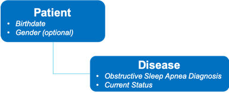
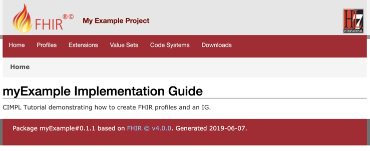
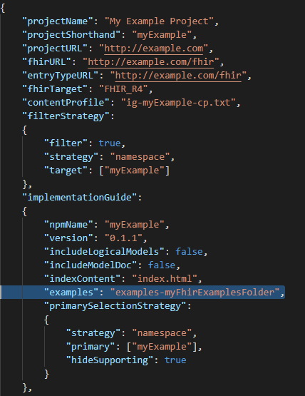
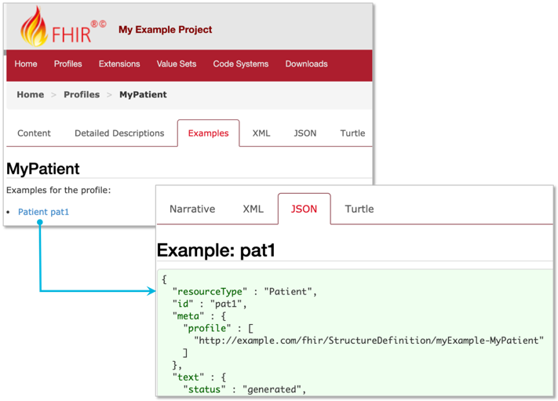
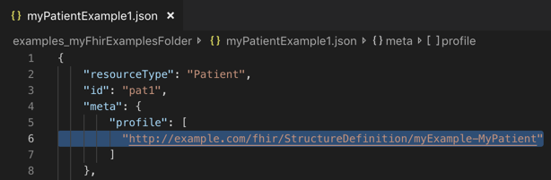

CIMPL In-depth Tutorial
Preface
CIMPL (Clinical Information Modeling Profiling Language) is a specially-designed language for defining clinical information models. It is simple and compact, with tools to produce Fast Healthcare Interoperability Resources (FHIR) profiles, extensions and implementation guides (IG). Because it is a language, written in text statements, CIMPL encourages distributed, team-based development using conventional source-code control tools such as Github. CIMPL provides tooling that enables you to define a model once, and publish that model to multiple versions of FHIR.
Purpose of this Document
This is an extensive tutorial, meant to expose the reader to many aspects of CIMPL without going into full depth on any particular topic.
Intended Audience
The CIMPL Authoring Guide is targeted to any person comfortable with using software developers or people comfortable with programming languages. Familiarity with FHIR is helpful as the tutorial references FHIR artifacts (such as Resources, Elements, etc.)
Prerequisite
This guide assumes you have:
- Installed the latest version of the SHR-CLI software as documented in CIMPL Setup and Installation (preferably installed in the
~/cimpl/shr-clidirectory) - A text editor to edit you CIMPL files (preferably VSCode with the vs-code-language-cimpl extension, but not required)
- Reviewed the Hello World Tutorial.
Table of Contents
Initial Setup
Note: This tutorial was run using a MacOS environment. While CIMPL is platform independent, the command lines run in a command line terminal will differ in file path specifications. For a Windows command line terminal, replace all the path references of forward-slash
/to back-slash\.
To keep this tutorial more focused on how to model, we're first going to setup the environment with some supporting configuration and core data type files.
The following directory structure is assumed:
Directory: cimpl
|_ shr-cli
Note: Your top level directory where SHR-CLI was installed might differ. If so, then you'll be instead referencing the relative directory where you have installed shr-cli.
Create a sub-directory under cimpl called myExampleC6
Now your directory structure should look like this:
Directory: cimpl
|_ shr-cli
|_ myExampleC6
Copy the following files to the myExampleC6 sub-directory. The files contain global definitions for Code Systems, Value Sets, maps to FHIR R4 elements and examples. These file names are hyperlinked for retrieval:
| File | Purpose |
|---|---|
| obf-datatype.txt | Contains CIMPL datatype definitions |
| obf-datatype-vs.txt | Contains value sets supporting the datatypes |
| obf-datatype-map-r4.txt | Provides mapping between CIMPL datatypes and FHIR 4.0 datatypes |
| ig-myExampleR4-config.json | Has configuration settings to support implementation guide creation |
Modeling Process
This tutorial guides you in a step by step process to build a basic clinical data model that directly references FHIR resources. It also illustrates the modeling practice briefly described in the CIMPL Authoring Guide.
The steps are briefly summarized here for conciseness:
- Define use case(s)
- Create a high-level conceptual model
- Create a data element requirement list
- Create the logical model
- Create logical element-to-FHIR mappings
- Generate the FHIR Implementation Guide
- Create FHIR examples for each profile (optional)
Define Use Cases
For our example, we'll focus on obstructive sleep apnea (OSA). The goal is to measure the prevalence of patients diagnosed with OSA, stratified by age groups. A secondary goal is to further identify the population by gender. Electronic Health Records (EHRs) are the primary source for this information.
Create a High-level Conceptual Model
A conceptual diagram is shown in the figure below:

Diagrams of this sort may be valuable to the community reviewing and using the implementation guide, especially when the model is complex, and can serve as a basis from which to drive further design of the model.
Create a List of Data Elements
Creating a list of data elements helps to refine the contents, data types, cardinality, and clinical terminologies needed in the model. It helps at this stage to research existing standards and related models, but for this example, we won't look beyond FHIR resources for inspiration.
The table below is a high level summary of the elements we need in this use case:
| Entity | Data Element Name | Cardinality | Data type | Value Set (if applicable) |
|---|---|---|---|---|
| Patient | BirthDate | 1..1 | date | |
| Patient | Gender | 0..1 | concept | HL7 Administrative Gender |
| OSADisorder | OSADisorderCode | 1..1 | concept | SNOMED codes for OSA |
| OSADisorder | OSADisorderStatus | 0..1 | concept | HL7 status codes |
Create the Logical Model in CIMPL
Now we can start authoring models in the CIMPL development environment. In this example, the only part of the CIMPL Class Library we are using are the datatypes.
CIMPL has three main files involved in the creation of a logical model - one of each for every CIMPL project. We list them here for brevity, but reference the CIMPL 6 Language Reference Guide for further details on each:
- Class file
- Value Set file
- Map file
The class file is the place to start. Create a new file under the myExampleC6 subdirectory called myExample.txt.
Type in the CIMPL header information designating the namespace and version of the DataElement parser:
Grammar: DataElement 6.0
Namespace: myExample
Description: "CIMPL Tutorial: myExample for an OSA patient."
Uses: obf.datatype
Where:
Grammaris a required keyword indicating the parser to be used, in this case DataElement 6.0Namespace, also required, is a short name for your project, implementation guide, or module you are defining. This should be a meaningful and easily recognizable name.Usesis the list of all namespaces which your model elements will reference. For our example, we fix this to obf.datatype.
Next, we will create our first class, called MyPatient, which we determined will also have the following properties:
MyBirthDate(a required field which only accepts one value)MyGender(an optional field that we want to have the receiver accept, if the value is known.)
Let's build our Patient logical model. Add the following lines below your CIMPL header:
Entry: MyPatient
Description: "An individual awaiting or under medical care and treatment. (source: Webster's Dictionary)"
Property: MyBirthDate 1..1
Property: MyGender 0..1
Element: MyBirthDate
Description: "The date when the patient was born."
Value: date
Element: MyGender
Description: "Either of the two sexes (male and female), especially when considered with reference to social and cultural differences rather than biological ones. (source: Oxford Dictionary)"
Value: concept from http://hl7.org/fhir/ValueSet/administrative-gender
What we just represented here is that there is a Patient entity called MyPatient which has 2 properties: MyBirthdate and MyGender. The FHIR Patient resource has these attributes; for purposes of this tutorial we will not consider that information -- your logical model won't always have the same attributes as a FHIR resource.
We determined from our clinical requirements that MyBirthDate has a data type of date, which is one of the primitive data types supported in CIMPL. The Value keyword expresses the desired datatype.
We also determined that MyGender is a value set that can be male, female, or unknown. For the sake of simplicity, we find that HL7 has a matching value set identical to our requirements so we'll use that one for its value. In this case, the Value keyword not only says that the datatype is a concept (the CIMPL primitive for coded types), but also says that the concept must come from the value set http://hl7.org/fhir/ValueSet/administrative-gender.
Now let's work on the OSA Disorder entity. Add the following text into the file:
Entry: ObstructiveSleepApneaDisorder
Description: "Obstructive sleep apnea (OSA) is a sleep-related breathing disorder that involves a decrease or complete halt in airflow despite an ongoing effort to breathe. It occurs when the muscles relax during sleep, causing soft tissue in the back of the throat to collapse and block the upper airway. (source: American Academy of Sleep Medicine)"
Property: OSADisorderCode 1..1
Property: OSACurrentStatus 0..1
Element: OSADisorderCode
Description: "The diagnosis or problem list code assigned to the OSA disorder."
Value: concept from OSADisorderVS
Element: OSACurrentStatus
Description: "State of the diagnosis or problem list item."
Value: concept from OSACurrentStatusVS
Here we specify the entity called ObstructiveSleepApneaDisorder containing two properties, the disorder code and current status. Both properties are defined as concepts that reference value sets (yet to be defined). If you are familiar with the FHIR Condition resource you will notice that the elements in your model replicate two Condition elements. At a later point in this tutorial, the elements will be mapped to FHIR resource elements.
Creating Custom Value Sets
We now need to define the value sets, OSADisorderVS and OSACurrentStatusVS.
Create a new file called myExample-vs.txt underneath the myExampleC6 directory, and add the CIMPL value set header information below:
Grammar: ValueSet 5.1
Namespace: myExample
Where:
Grammaris the keyword which specifies that the file created is a value set file conforming to CIMPL value set parser version 5.1.Namespaceis the keyword whose value contains the namespace defined for your model. In this case, it'smyExample.
Next we specify the terms in the value sets, which we've already defined in our clinical data requirements. Add the following text below the CIMPL value set header information:
CodeSystem: SCT = http://snomed.info/sct
CodeSystem: STAT = http://terminology.hl7.org/CodeSystem/condition-clinical
ValueSet: OSADisorderVS
Description: "The list of disorders related to Obstructive Sleep Apnea."
SCT#1101000119103 "Obstructive sleep apnea of adult (disorder)"
SCT#1091000119108 "Obstructive sleep apnea of child (disorder)"
ValueSet: OSACurrentStatusVS
Description: "The current disease status of an OSA patient"
STAT#active "Active"
STAT#inactive "Inactive"
STAT#resolved "Resolved"
Here the CodeSystem keyword defines which terminologies (such as SNOMED-CT, ICD-10, etc.) the codes in value sets are drawn from. The code systems are referred to by URLs. To learn more about code systems and the relationship to value sets, see https://www.hl7.org/fhir/codesystem.html.
The format for specifying each term in the value set is as follows:
<CodeSystem Alias>#<Code> "<Display>", for example: STAT#active "Active" where:
STATis an alias that represents the http://terminology.hl7.org/CodeSystem/condition-clinical code system, assigned in theCodeSystem:statement#is a delimiter separating the coding system and the codeactiveis the term code for the concept"Active"is the display name associated with the term code.
Note: Code system aliases are required. Direct use of a URL or urn (e.g., http://terminology.hl7.org/CodeSystem/condition-clinical#active) is NOT currently supported in CIMPL.
Create Logical Model to FHIR mappings
Create a file called myExample-map-r4.txt under the myExampleC6 sub-directory, and copy the following header information to the top of the file:
Grammar: Map 5.1
Namespace: myExample
Target: FHIR_R4
Where:
Grammar:is the version supported for the mapping grammarNamespace:is the name of the namespace for your logical model (same as used before)Target:is the FHIR release version targeted for mapping elements in your logical model, one of the following values: FHIR_DSTU2, FHIR_STU_3, or FHIR_R4. Our mapping will be to FHIR_R4. Specifying the target also configures the CIMPL tool chain to generate R4 structure definitions.
During mapping, we ask the following questions:
- Is there a FHIR resource that could be a good fit for our logical model entities?
- If yes, is there an equivalent FHIR attribute or extension for each of the properties in our logical model?
- If there is an equivalent FHIR attribute then do the data types, cardinality constraints, and terminology bindings align?
For simplicity, we made the example such that the answer is yes to all questions. MyPatient entity can map to the Patient resource, and ObstructiveSleepApneaDisorder can map to the Condition resource. Because we have specified our target map to be FHIR_R4, our mappings target the R4 version.
Add the following statements to your map file:
MyPatient maps to Patient:
MyBirthDate maps to birthDate
MyGender maps to gender
ObstructiveSleepApneaDisorder maps to Condition:
OSADisorderCode maps to code
OSACurrentStatus maps to clinicalStatus
The logical model properties also match to equivalent FHIR attributes for each resource we've chosen to build our profiles. And because FHIR profiling does allow to further constrain and not loosen cardinality constraints and binding strengths, we can confirm that our elements also satisfy those requirements.
Generate the FHIR IG
In this section, we cover some of the extra CIMPL configuration steps that might be needed to customize the output of your FHIR IG.
Specify the FHIR "Must-Support" elements
The CIMPL toolchain provides a separate configuration file called a Content Profile which serves two purposes:
- Specifies which elements in your logical model that you want to designate in FHIR as "must-support" (MS) in FHIR.
- Instructs the CIMPL toolchain which elements you want auto-generated in a data dictionary output.
Together with specified cardinality, the MS declaration can be interpreted as follows:
| Cardinality | Must Support | Interpretation |
|---|---|---|
| 1..1 | any | required |
| 0..1 | yes | required if known |
| 0..1 | no | optional |
Create a file called ig-myExample-cp.txt under the myExampleC6 sub-directory. Paste the following code snippet into your file:
Grammar: ContentProfile 1.0
Namespace: myExample
MyPatient:
MyGender MS
ObstructiveSleepApneaDisorder:
OSADisorderCode MS
For our example, we have designated the MyGender and OSADisorderCode elements as must-support. Content Profile documentation can be found in the CIMPL Tooling Reference Guide.
Create a Homepage for the IG
Create a new file called index.html under the myExampleC6 directory. Copy the following contents in this page:
<h1>myExample Implementation Guide</h1>
<p>CIMPL Tutorial demonstrating how to create FHIR profiles and an IG.</p>
Configure the Output
For purpose of the tutorial's focus on modeling, we have already created a configuration file called ig-myExampleR4-config.json and you copied this file to the myExampleC6 directory at the start of this tutorial.
Let's review some highlights of the configuration file (click link to open). The table below shows a partial listing of fields in the config file. More advanced configuration options are available in the CIMPL Tooling Reference Guide.
| Parameter | Value | Meaning |
|---|---|---|
ProjectName |
"My Example Project" | This will appear on the home page title of your generated IG. |
fhirURL |
"http://example.com/fhir" | The URL pre-pended to your StructureDefinition canonical URLs. |
contentProfile |
"ig-myExample-cp.txt" | The name of the file which sets FHIR must-support flags. |
filterStrategy |
"true" | Indicates that not all Entries in the logical model should be included in the IG. |
target |
["myExample"] | JSON array containing the namespace(s) targeted by the filtering strategy. |
indexContent |
"index.html" | The file containing the IG homepage. |
Compile CIMPL
To create profiles, extensions, and other FHIR assets used in the IG, you run the SHR-CLI tool, as follows:
- Open a command line terminal and navigate to the ~/cimpl/shr-cli directory (where you installed SHR-CLI)
-
Run the following command:
node . ../myExampleC6 -l error -o myExampleC6r4 -c ig-myExampleR4-config.json
Where:
nodeis the command that starts the SHR-CLI application.- The first dot
.represents the path to the SHR-CLI tool, in this case, the current working directory. The dot represents the current directory. ../myExampleC6is the path where your CIMPL modeling and configuration files are located. The double dot..represents the directory above the current working directory.- the
-lparameter anderrorvalue specifies logging to only show errors. - the
-oparameter andmyExampleC6r4value specify the name of the directory in which you want to generate the IG output. - the
-cparameter andig-myExampleR4-config.jsonvalue specify the name of the CIMPL configuration file to reference for the output.
After you run this first command, as an interim check, navigate to the ~/cimpl/shr-cli folder. You should see a new subdirectory created called myExampleC6r4 which will eventually contain the StructureDefinition and html output of the generated IG. This is the value that was specified in the -o parameter in the above command.
Run the FHIR IG Publisher
-
From the same command line terminal, run the following command:
yarn run ig:publish -
Alternately, run the full command to specify the destination directory (following the
-igflag):java $JAVA_OPTS -jar myExampleC6r4/fhir/guide/org.hl7.fhir.publisher.jar -ig myExampleC6r4/fhir/guide/ig.json
Navigate to the ~/cimpl/shr-cli/myExampleC6r4/fhir/guide/output directory and open the index.html file in a browser. This will display the home page of the generated FHIR IG for your example project.

Add FHIR Examples to your IG
We're now going to add a FHIR example that conforms to our profile. This step adds an example file to the directory you created in the first step. Since the details creating FHIR examples are out of scope for this tutorial, we're going to supply one for you.
First, create a subdirectory called examples-myFhirExamplesFolder under the myExampleC6 folder.
Directory: cimpl
|_ shr-cli
|_ myExampleC6
|_ examples-myFhirExamplesFolder
Copy the file myPatientExample1.json and its contents into the -myFhirExamplesFolder.
Note: The FHIR example can contain additional content, and still pass validation. What matters is that the requirements of the profile are met.
Add the following line to your cimpl configuration file within the "implementationGuide": JSON object:
"examples": "examples-myFhirExamplesFolder"
The following screenshot shows where to put this parameter within the CIMPL configuration file ig-myExampleR4-config.json:

Now run SHR-CLI and the IG publisher commands again:
node . ../myExampleC6 -l error -o myExampleC6r4 -c ig-myExampleR4-config.jsonyarn run ig:publish
Open the index.html file from the generated IG output in your browser and navigate to the Profiles tab and select the MyPatient profile.
You'll now find a tab called Examples which contains a URL to the example within the examples-myFhirExamplesFolder.

So you might be thinking, "How does the IG know which profile to add your example to?"
The answer is that the name of the related FHIR StructureDefinition for the profile is specified within the FHIR example itself:

The IG Publisher will match the canonical URL specified in the example with that specified in the IG. Note that the value of the profile parameter must match the canonical URL of the profile where the StructureDefinition is located in order for the example to appear.